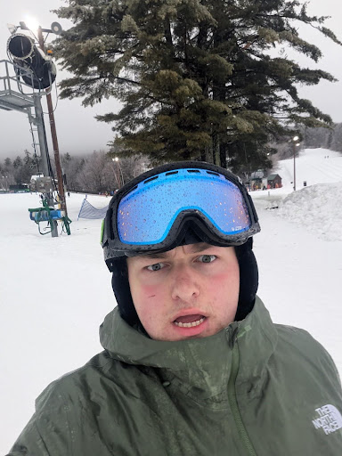

Bio
My name is Iraj Tambat. I like designing things, going out and finding new coffee shops and learning new things. I also love dogs and penguins.
My name is Iraj Tambat. I like designing things, going out and finding new coffee shops and learning new things. I also love dogs and penguins.

Mannix Muir: Hailing from the granite state of New Hampshire, Mannix is currently enrolled at Michigan State University majoring in Games and Interactive Media. He’s a game producer and web designer with a passion for creating narrative driven interactive epics. Outside of academics you can find him reading comics, designing games or running Niche! A student run game show at MSU. Mannix has spent my past couple summers at YMCA camp Mi-Te-Na where he’s been able to work on physical playtests of some personal projects. In his spare time he enjoys outdoor activities like snowboarding and camping.
Weihang Hu: I'm from Chongqing, China, and currently studying Computer Science at Michigan State University. I'm a software developer who enjoys building web applications and exploring artificial intelligence. In my spare time, I enjoy musicals and Formula One racing, which perfectly balance my pursuit of creative expression and high-performance technology.
Samuel Doerr: Having been born and raised in Traverse City Michigan, I grew up surrounded by woods and water which helped foster my love for the outdoors. As much as I love the outdoors, I also love games as they were a huge part of my upbringing and I have many fond memories of playing them with my brother. At MSU I’m pursuing a bachelors in game development and considering getting a masters in a related field. Overall, one day I hope to create narratively driven games that will foster fond memories for players, just as games have done for me.
Future projects will live here.